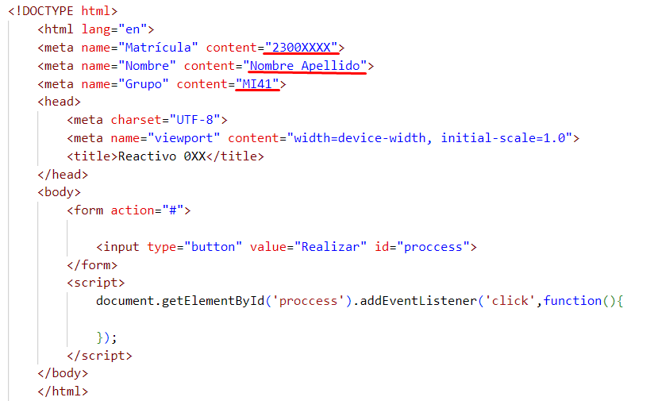

Respetar el siguiente formato de código para realizar sus actividades y recordar que cada ejercicio se debe duplicar al archivo y cambiar el número consecutivo del final. 
var numero = parseInt(prompt("Teclea un número"));
if (numero>=0){
alert(numero +" es positivo");
}else{
alert(numero +" es negativo");
}
var dividendo = parseInt(prompt("Primer numero"));
var divisor = parseInt(prompt("Primer numero"));
var cociente;
if (divisor != 0){
cociente = dividendo/divisor;
alert( dividendo + "/" + divisor + " = " + cociente);
}
else{
alert("No puedes dividir entre 0");
}
var num1 = parseInt(prompt("Teclear un número"));
var num2 = parseInt(prompt("Teclear un número"));
var resta;
if(num1 > num2){
resta = num1 - num2;
alert("Diferencia "+ resta);
}else{
resta = num2 - num1;
alert("Diferencia "+ resta);
}
var articulo = prompt("Puede elegir: vino, cerveza, otros")
if ( articulo === "vino" || articulo === "cerveza"){
alert("vaya a la barra");
}else{
alert("vaya a la tienda");
}
var medio = prompt("tren, autobús, coche, bicicleta");
if (medio === "tren" || medio === "autobús"){
alert("Lleva dinero para el ticket");
}
var articulo = prompt("Puede elegir: vino, cerveza, otros")
if ( articulo === "vino" || articulo === "cerveza"){
alert("vaya a la barra");
}else{
alert("vaya a la tienda");
}
var medio = prompt("tren, autobús, coche, bicicleta");
if (medio === "tren" || medio === "autobús"){
alert("Lleva dinero para el ticket");
}
var tiempo = parseInt(prompt("ingresa el tiempo en horas enteras"));
var tramo = parseInt(prompt("ingresa la distancia"));
var velocidad = tramo/tiempo;
if (velocidad >= 40 && velocidad <= 60){
alert("Has pasado la prueba");
}else{
alert("Has sido descalificado");
}